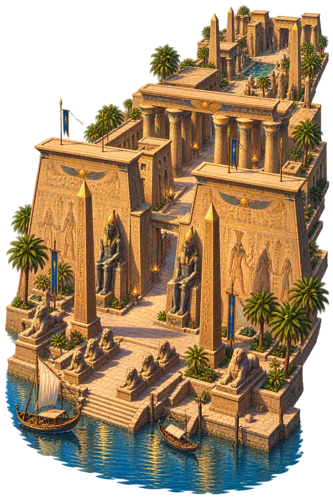
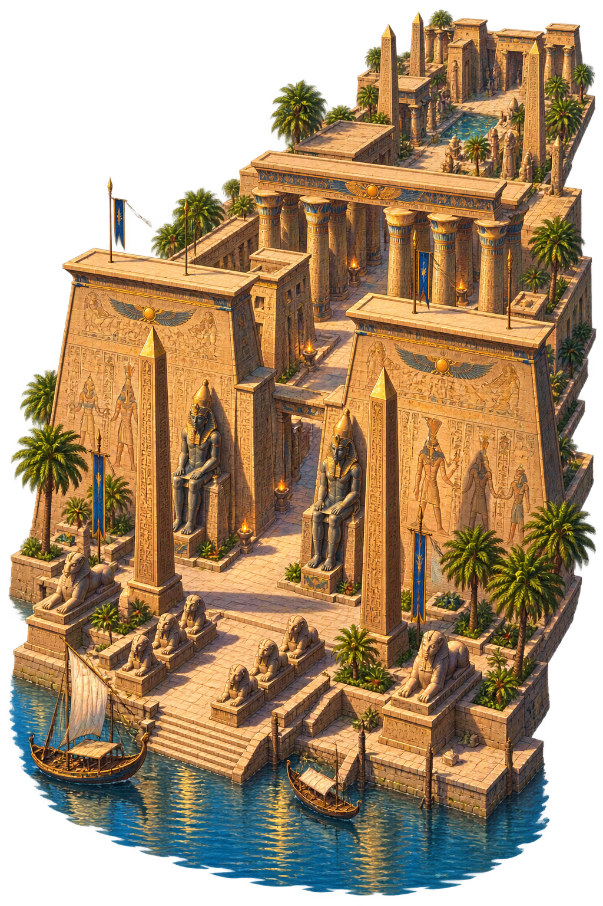

Stories of Luxor
Luxor’s mythology is the fertility-cycle of Amun himself: each year the god sailed south from Karnak to his harem at Ipet-resyt, married his own power in the sanctuary, and returned renewed. The temple’s birth-colonnade extends the cycle to kingship — Amenhotep III’s divine conception carved as theology-in-stone.
The Opet festival’s climax was the god’s arrival at Ipet-resyt: the barque of Amun moored before the colonnade, the Theban crowd celebrating the union that renewed the Nile, the king, and the year in a single night of liturgy. The return to Karnak closed the cycle eleven days later.
Luxor’s colonnade reliefs narrate the conception of Amenhotep III: Amun takes the form of the king, visits queen Mutemwiya, the child is fashioned by Khnum on the potter’s wheel and blessed by the gods — the canonical statement that the pharaoh is the god’s literal son, carved at full scale.
A mosque still stands inside the temple’s court — Abu Haggag of Luxor, whose mouloud festival each year crowds the ancient colonnade with boats and lights. The building has never stopped being sacred; only the name of the sacred changed, from Ipet-resyt to the Sheikh’s mosque.
The Arabs who settled among the ruins called them al-uqsur — ‘the castles’ — seeing palaces in the pylons; the name shrank to Luxor and became the city’s. It is one of the few cases where the medieval name of the ruins replaced the ancient name of the living town.
Ipet-resyt, the Harem of Amun
Luxor — Arabic ‘the palaces’ — names the southern sanctuary of the Theban triad, where Amun visited in the great Opet festival to renew his generative power. Its ancient name, Ipet-resyt, ‘the Southern Select Place’, marks it as Karnak’s counterpart across the river: not the god’s estate but his bridal-chamber.
Ipet-resyt — the harem-temple where Amun’s fertility was renewed each year.
Reliefs of the divine birth of Amenhotep III — the king’s theology of legitimate succession.
Fourteen massive papyrus columns — the finest preserved New Kingdom colonnade.
The river-end of the great festival: Amun’s barque docked here for the marriage-renewal rites.
From the original script to the living URL
Luxor
The name survives in scholarly transliteration. Luxor is the standard Egyptian romanisation, documented in academic sources — “The palaces”. The spelling uses ordinary Latin letters, so the canonical form and the ASCII form coincide.
The original script for this egyptian name has not yet been added to PUNICODEX. The form shown is a scholarly transliteration.
luxor
The plain luxor form shares the canonical spelling. Because this name is already written in Latin letters, no recovered diacritics are required; capitalization follows the proper-noun convention.
Luxor
The canonical spelling of Luxor needs no recovered marks. Its value is consistent citation, transparent provenance, and a stable digital home for the scholarly record. The address is readable as-is to both DNS and humanity.
Luxor.com
This restoration is written entirely in ASCII letters — no special domain encoding stands between Luxor and the DNS. The domain reads identically to machines and to human eyes.
The attested spelling family of Luxor
Luxor
The full canonical restoration. luxor.com is not in the PuniCodex collection — it is watched for release; if it drops, this temple upgrades to an owned flagship. Attested by Egyptology, Faulkner.
How Luxor was spoken
How Luxor is preserved in writing
A bespoke provenance study for Luxor is being prepared by the PUNICODEX scholarly team.
Contribute scholarly provenance →The lore you have read is the living myth. Extended Lore opens the scholarly vault beneath it: the cult and its material remains, a history of the image, the name after antiquity, a meditation on what the name still means, and the full scholarly apparatus — etymology, orthography, sources.
Enter Extended Lore